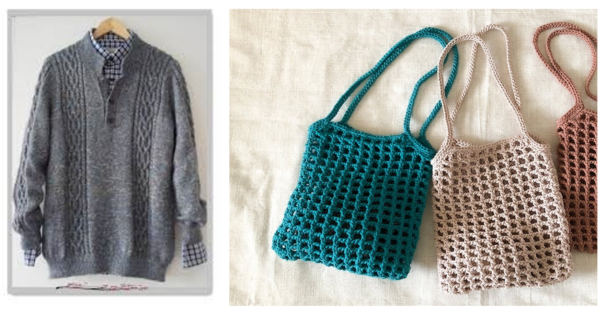

結果:棒針傾向大於鉤針
以上所選的選項都和棒針非常一致呢，雖然不能完全斷定，不過沒想法的話感覺可以從棒針下手噢!
市面上販售的很多毛衣、圍巾，很多都是用棒針的手法，因為織物會較輕薄。棒針織出來的織品穿起來非常舒適，百貨公司賣的喀什米爾毛衣、美麗諾毛衣都是棒針的手法~
不過鉤針對於新手比較好上手，作品可以非常多元，常常看到的包包、吊飾、披肩、髮帶，都是鉤針做的!
說這麼多，上面的結果只是建議，最後還是要靠柏寬先生決定啦!可以參考上面的說明做取捨，有進一步的問題也可以再問怡賢噢( ^ω^)

再測一次